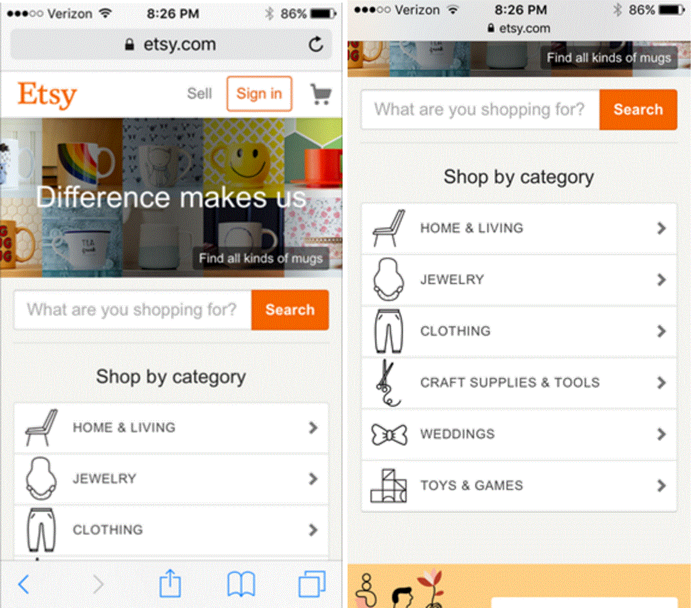
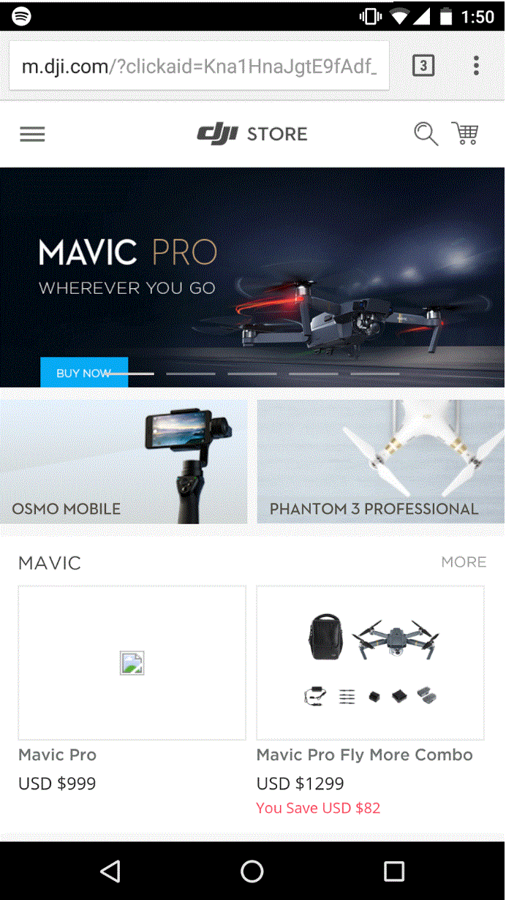
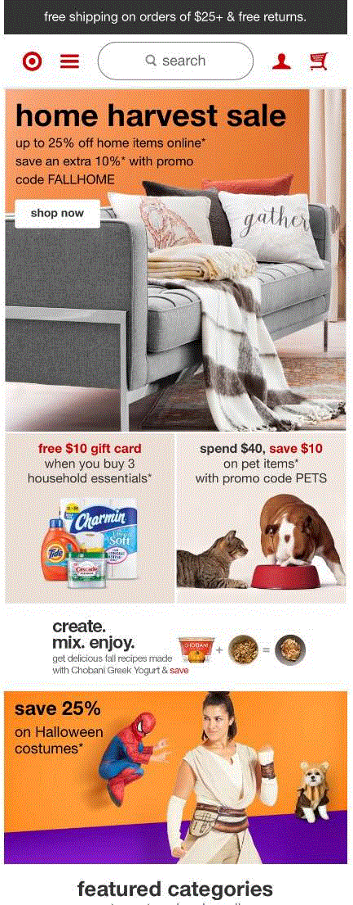
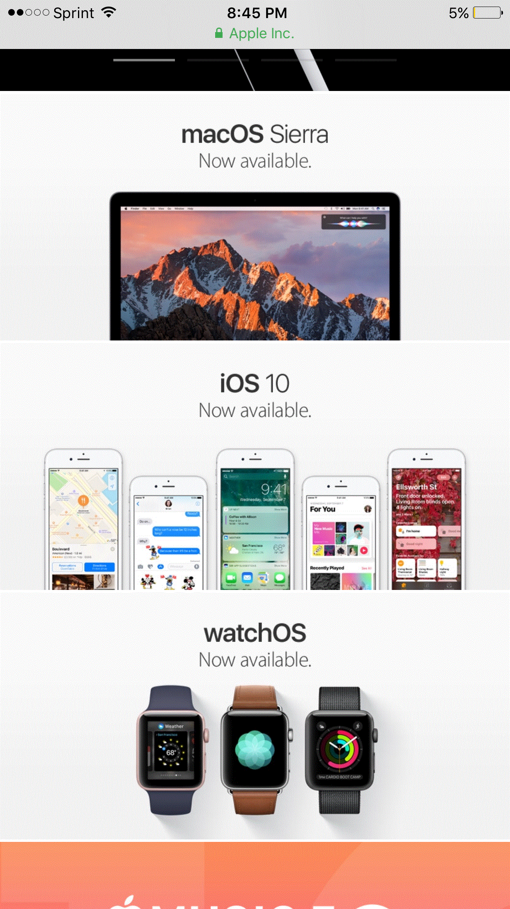

Proximity — Kaio Doxey
This website is called Etsy. It is primarily a merchandising website that sells vintage or hand-made goods. I thought that this was a good example of proximity because it allows you to simply search through the goods of the website by not just having a search bar, but also having search options. If you don’t know exactly what it is you want, the search options are all grouped close together to help you make a selection, thus demonstrating proximity. This makes selling Etsy’s merchandise easier because you can navigate through to find something specific, or just browse through a category that you find interesting. Another good aspect about the proximity of this page is that it separates itself from unrelated places of the web page. For example, the logo, shopping cart, and sign-in buttons are all separated from the search section by a picture of merchandise. Overall, the proximity layout of this page makes it really easy to use.
Alignment — Wyatt Larson
Dji.com did a very good job at making sure their website was properly aligned (though they had a missing picture for their newest drone, the Mavic Pro). They used a tile or block look to their webstore, each block featuring a unique item or product group. They aligned it in a way that the banner on top dominates the screen, then the smaller blocks underneath for additional information on products. Everything is straight and uniform. The dji logo is in center alignment of the page. All in all, they have a very properly and classically aligned website.
Repetition — Caliesha Stimpson
This website shows repetition very well because it uses a very consistent color scheme, and repetitious layout. Each of the different sections/promotions start with a large picture, with an orange base then is followed by small boxes with related content or sales. The layout repeats for each of the sections, and creates a sense of order unanimity.
Contrast — Jossten Childs
I believe that this website is an excellent example of how contrast can draw the attention to the shape of a product. Apple products have commonly been known for their excellent form factor, and Apple's website plays on this by showing outlines around all the phones and watches, effectively making them "pop." I also think that the use of black text on a white background is an excellent example of intelligent design. This process draws the eye to the center of the image where the text is, and effectively makes the text seem bigger and "more important"
Typography — Nicole Bunch
This is a good example of Typography because there is consistency in the sans-serif fonts. Contrast is created between different sizes and variation on bold and regular typeface, and they didn’t use any “black-list” typography like papyrus or comic sans. This kept the website looking crisp and professional. It is easy to see the titles and which letters link to another part of the site. Throughout the site it was easy to tell the titles of the products, using bold and the short description in regular font. The typography made the site easy to read and navigate.